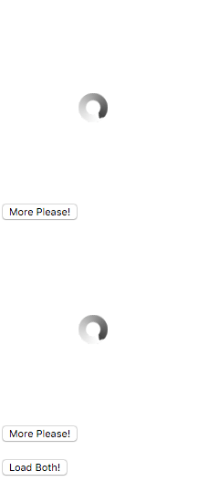

Composition in Practice
We said that the Elm Architecture is about Composition and Encapsulation. Now let's have a closer look at how this works in practice.
So far the code we have seen looked very similiar to traditional Redux, except that we are using Generators to deal with Side Effects. Imagine we have two programmers, one responsible for implementing the GifViewer Component and the other for a Component which shows a pair of GifViewers (let's call it GifViewerPair). GifViewerPair should be able to request fetching for both GifViewers at once. We'd like to use our colleague's implementation of GifViewer with the following interface:
import gifViewerUpdater, {
init as gifViewerInit,
fetchGif
} from '../gif-viewer/updater';
import GifViewer from '../gif-viewer/view';
GifViewer already contains gifViewerUpdater and gifViewerInit. What it does not contain is fetchGif, so we need to implement and expose it in gif-viewer/updater.js. Actually we have implemented it already, so we just need to export it:
export function* fetchGif(model) {
yield sideEffect(Effects.fetchGif, model.topic);
return {
...model,
gifUrl: null
};
};
export default new Updater(init('funny cats'), Matchers.exactMatcher)
.case('NewGif', function*(model, action) {
return {
...model,
gifUrl: action.url
};
})
.case('RequestMore', fetchGif)
.toReducer();
Instead of an anonymous function that handles the RequestMore Action, we'll turn it into a named function called fetchGif and export it so that it can be used externally. GifViewer is now encapsulated and ready to be used by our GifViewerPair Component. Let's create a new folder in redux-elm-skeleton called gif-viewer-pair with two files, updater.js and view.js. Don't forget to change main.js to load our GifViewerPair as the Root Component.
import run from './boilerplate';
import view from './gif-viewer-pair/view';
import updater from './gif-viewer-pair/updater';
run('app', view, updater);
Here comes the Composition part again. Let's define our initial Model for the Updater.
import { Updater } from 'redux-elm';
const initialModel = {
top: {},
bottom: {}
};
// Matcher is not provided here! We'll explain why later
export default new Updater(initialModel).toReducer();
As its name suggests, GifViewerPair embeds two GifViewers: top and bottom. We mentioned that the parent Component was responsible for holding child Models, therefore our Model consist only of two fields, top and bottom, each holding a GifViewer model.
What about the View? It looks like this:
import React from 'react';
import GifViewer from '../gif-viewer/view';
export default ({ model, dispatch }) => (
<div>
<GifViewer model={model.top} dispatch={dispatch} />
<GifViewer model={model.bottom} dispatch={dispatch} />
<br />
<button onClick={() => dispatch({ type: 'Load' })}>Load Both!</button>
</div>
);
Again, nothing but Composition. Just render two GifViewers and provide the corresponding Model instance. The top GifViewer gets model.top and the Bottom gets model.bottom. We also provide a dispatch property. When you are nesting Views, you always need to pass two props: the Model and the dispatch function.
You should be able to run the application now and see two GifViewers, but a lot of functionality is still missing.
